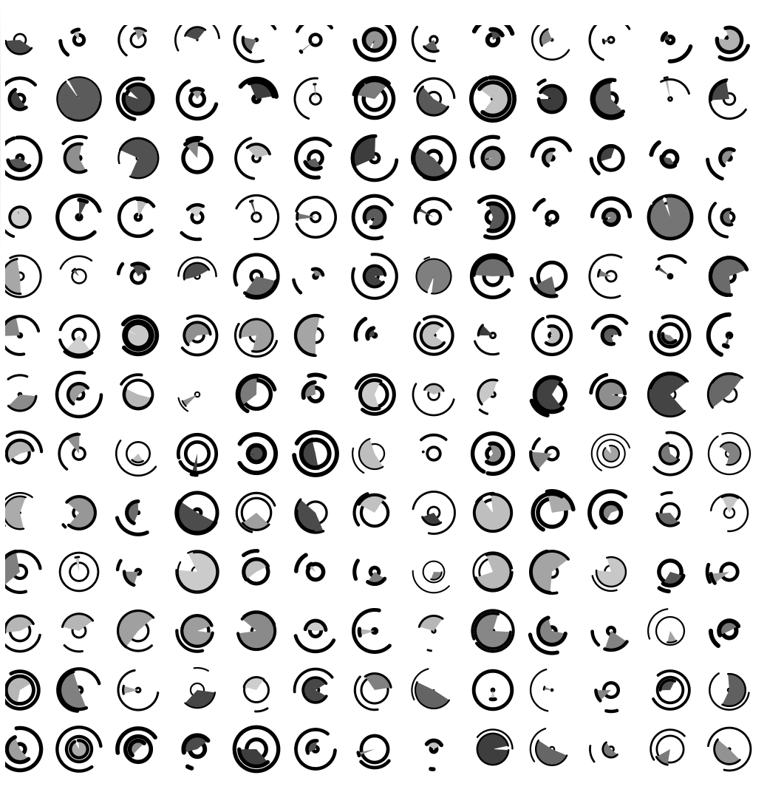
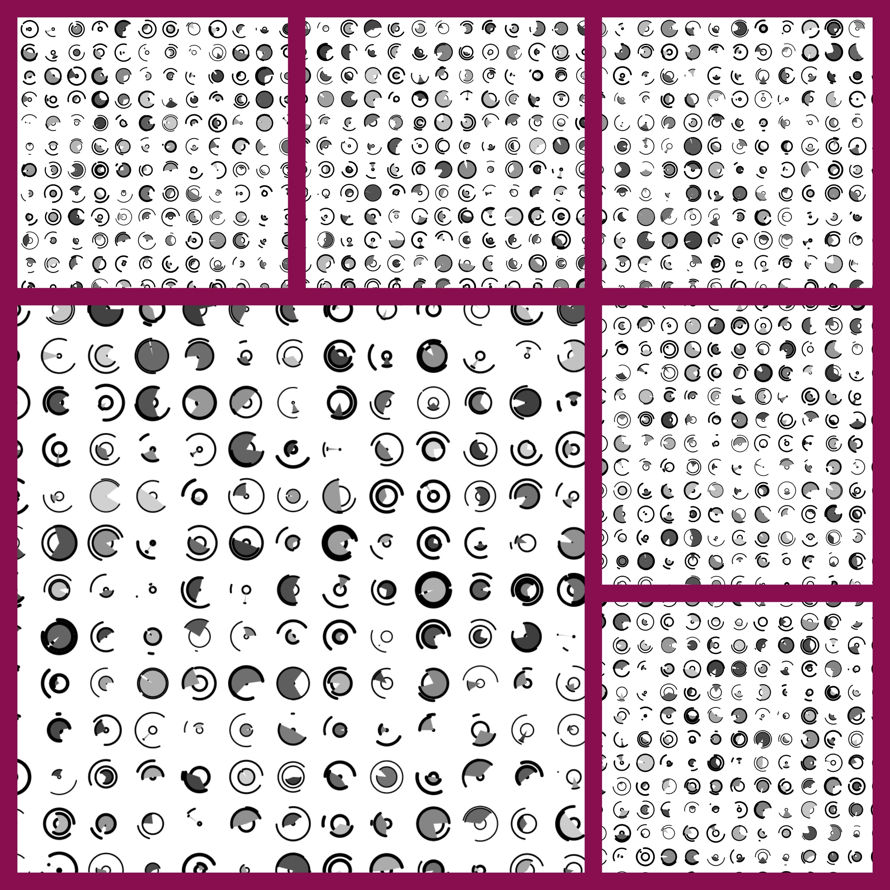

My task was to write a code, that would produce different pictures, depending on randomly chosen by computer data. I couldn't rely entirely on the random selection of values, because then the code simply wouldn't make sense at all, producing every time completely different results without any correlation with each other. I needed to limit the randomeness of my code, so to say.
Speaking about randomness in general, its beauty lies in its ability to bring suddenness, innovation and a sense of freedom. It adds an element of unpredictability to our life. In simple words, randomness is like a box of surprises, making everything different and exciting. It adds a bit of magic to our world and helps create amazing things we might not have imagined otherwise. Even the slightest turn can lead to big changes. That is what I was thinking about, observing the differences in the output of my code.
I don't think that it would be particularly advisable to explain in detail, how I wrote this code. However, for those interested, I will attach it below though.
function setup() {
// setup runs once
const canvas = createCanvas(520, 520);
canvas.parent("sketch");
background(255);
angleMode(DEGREES);
const step = 40;
const cell = step/2;
for (let x = cell / 2; x < width; x = x + step) {
for (let y = cell / 2; y < height; y += step) {
push();
strokeWeight(random(1, 3));
circle(x, y, cell + random(-30, 0));
fill(10 + random(50, 200));
let i = random(-10, 10);
arc(x, y, cell + i, cell + i, random(0, 270), random(90, 360));
noFill();
let n = random(5, 10);
arc(x, y, cell + n, cell + n, random(0, 270), random(90, 360));
pop();
}}}
function draw() {
// draw runs all the time
}
function keyPressed() {
if (key === "S" || key === "s") {
save("smallmultiples-mkukharenka.png");
}}